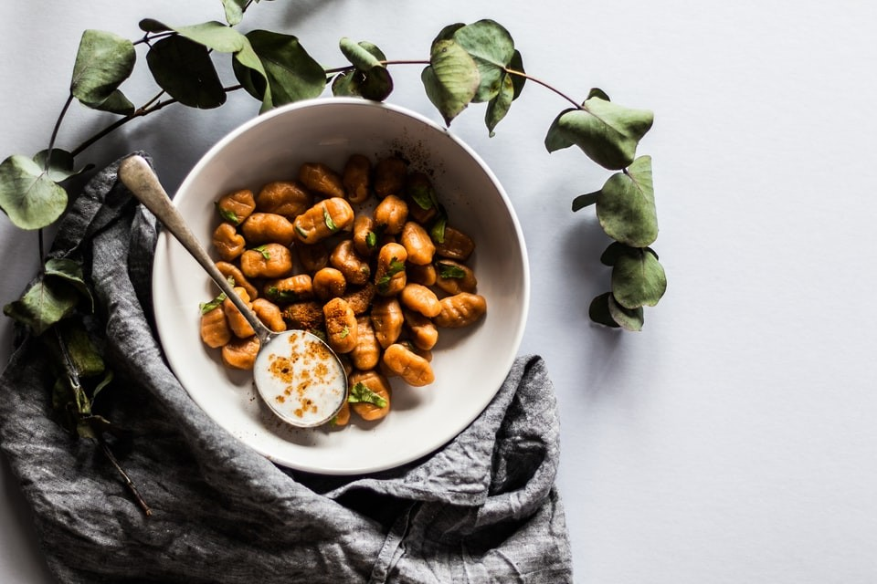
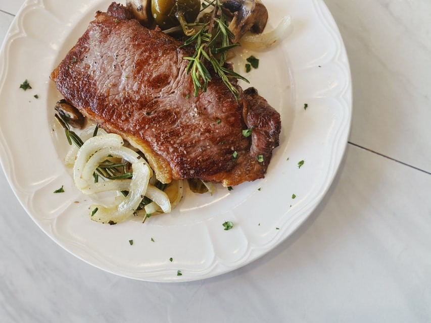

Recetas

Ñoquis de zapallo
Ingredíentes
- 1 kg de zapallo, sin cáscara
- 300 g de harina
- 1 Huevo
- Queso rallado
- Manteca
- Salvia fresca
- Sal
- Pimienta
- Nuez moscada
Preparacion:
- Cocinar el zapallo al vapor, hasta que esté tierno y se pueda reducir a puré.
- Mezclarlo con el huevo, 3 cucharadas de queso rallado, sal, pimienta, nuez moscada y la cantidad de harina que absorba hasta obtener una masa que no se pegotee en los dedos.
- Formar cilindros del grosor de un dedo y luego cortarlo en pequeños segmentos.
- Hervirlos con abundante agua con sal hasta que suban a la superficie.
- Servirlos con abundante manteca derretida perfumada con salvia y un toque de pimienta. Queso rallado a gusto

Sopa de Tomates
Ingredíentes
- 75 gr. de manteca
- 1 litro de agua
- 100gr. de extracto de tomate
- 2 cdas. de harina
- 20 cc. de crema de leche
- 1 cda. de azúcar
- 200 g. de queso crema
- 1 cebolla de verdeo
- Sal pimmienta, oregano y nuez moscada
- 200 gr de mozzarella
Preparacion:
- Fundir 50 gr. de manteca, mezclar con las cdas de harina, revolviendo constantemente y así agregar el agua y el extracto de tomates.
- Condimentar con sal, pimienta, orégano, nuez moscada y azúcar. Retirar del fuego, agregar la crema de leche y los 25 gr. de manteca restantes.
- Luego picar la cebolla con parte de sus tallos, mezclar con el queso y salpimentar.
- Servir la sopa en los platos sobre la mozarella y en el centro de cada una, 1 cda. de la mezcla de queso y cebolla.
Flan de coco
Ingredíentes
- 1 lata pequeña de leche condensada.
- 1 lata pequeña de leche de coco.
- 4 huevos.
- 1 cdta. de extracto de vainilla.
- 1 cdta. de extracto de coco.
- Media taza de azúcar refinada
Preparacion:
- Precalienta el horno a una temperatura de 200°C.
- En una flanera, verter el azúcar y llevar a fuego lento hasta conseguir que se vuelva caramelo. Cuando ello suceda, apaga el fuego y cubre las paredes de la flanera con el caramelo, deja enfriar.
- Utiliza la licuadora para mezclar los huevos con la leche condensada y de coco, además de las esencias. Vierte el preparado en la flanera y lleva al horno en baño maría por espacio de 60 minutos aproximadamente.
- Pasado el tiempo apaga el horno, pero no saques la flanera hasta que se enfríe.
- Refrigera hasta que sea momento de servir.

Salmón
Ingredíentes
- 500 gr de salmón
- Aceite de oliva
- 1 limón
- Sal gruesa y pimienta
Preparacion:
- Calienta el horno a una temperatura de 180°C.
- Limpia el salmón y salpimentar al gusto, también puedes añadir un chorro de aceite de oliva.
- Poner el pescado en una bandeja para horno.
- Partir el limón en dos y cortar en rodajas una de las mitades, ponerlas sobre el salmón.
- Llevar al horno y dejar cocinar por aproximadamente 20 minutos.
- Sirve acompañado de quinoa o ensalada, también puedes utilizar la mitad del limón restante para acompañar el plato ya que algunas personas gustan de acompañar el pescado con zumo de limón.

Tortilla española
Ingredíentes
- 5 huevos
- 500 gr de papas
- 1 cebolla
- Sal
- Aceite de oliva
Preparacion:
- Pela, lava y corta las papas.
- Calienta una sartén con abundante aceite y, cuando esté caliente, añade las papas y deja que se cocinen a fuego medio, removiendo de vez en cuando para que no se quemen.
- Agrega la cebolla y mezcla. Sigue cocinando hasta que las papas estén cocidas.
- Saca las papas con la cebolla y colócalas en un colador para retirar el exceso de aceite.
- Ahora tienes dos formas de hacer la tortilla de papas dependiendo de si quieres que quede más o menos jugosa. La primera de ellas consiste en batir bien los huevos, agregar las papas y un poco de sal y mezclar. Si los huevos quedan espumosos, el resultado será una tortilla de papas esponjosa y cocinada. La segunda opción consiste en incorporar las papas en un bol, añadir los huevos enteros, sal al gusto y mezclar. De esta manera, es decir, sin batir antes los huevos, el resultado es una tortilla de papas jugosa.
Tarta queso
Ingredíentes
- 300 gramos de queso de untar (queso crema)
- 4 huevos
- 125 gramos de azúcar
- 125 gramos de yogur natural o de limón
- 2 cucharadas soperas de zumo de limón/li>
- Ralladura del limón
- 75 gramos de harina de maíz (maicena )
Preparacion:
- Para hacer la tarta de queso y limón, retira los ingredientes del frigorífico un poco antes para que estén a temperatura ambiente. Enciende el horno a 180 ºC para que se vaya calentando mientras preparas la masa de la tarta. Hecho todo esto, bate los huevos con el azúcar hasta que la mezcla blanquee y quede esponjosa. Te puede llevar unos 5 minutos.
- Añade el resto de los ingredientes menos la harina de maíz. Así pues, agrega el queso crema a temperatura ambiente, el yogur, la ralladura de un limón y las 2 cucharadas de zumo de limón. Mezcla hasta que el queso quede integrado en la masa. Si quieres que el cheesecake de limón quede con mucho sabor a limón, puedes añadir más zumo.
- Incorpora la harina de maíz (maicena) e intégrala haciendo movimientos envolventes suaves para que la masa no pierda volumen.
- Vierte la masa en un molde de 22-24 cm de diámetro, previamente engrasado con mantequilla y un poco de harina. También puedes forrar el molde con papel sulfurizado (vegetal). Hornea la tarta de queso y limón a 160 ºC, con calor arriba y abajo, durante unos 40-50 minutos, según el horno. Cuando empiece a dorarse por los bordes, pincha el centro con un palillo. Ha de estar casi seco el centro.
- Cuando esté la tarta, apaga el horno y déjala dentro unos 15 minutos, con esto se terminará de cocinar por el centro y así quedará tierna y jugosa. Pasado este tiempo, sácala del molde y deja que se enfríe por completo. ¡Listo! La receta de tarta de limón y queso es sencilla y queda espectacular. ¡Todos van a querer repetir!

Carne al horno
Ingredíentes
- 400 gramos de Lomo de ternera
- 2 cucharadas soperas de Mostaza de Dijon
- Aceite de oliva
- Sal
- Pimienta
Preparacion:
- Reunimos todos los ingredientes para preparar la carne.
- En primer lugar limpiamos bien el entrecot de ternera quitando las partes grasas que no nos gusten. A continuación, salpimentamos la carne.
- Untamos el lomo de ternera con mostaza en grano por ambas caras y reservamos. Mientras, precalentamos el horno a 200 ºC durante 10 minutos.
- Con ayuda de un poco de cuerda para cocina, hacemos un paquetito con el lomo de ternera para que al cocinarse mantenga todos sus jugos y quede más tierno. Colocamos la carne en una bandeja apta para horno engrasada con un chorrito de aceite de oliva.
- Metemos el lomo de ternera al horno a 180 ºC durante 30-35 minutos aproximadamente. El tiempo de cocción depende un poco del peso de la pieza. Tened en cuenta que la cocción recomendada es de 50 minutos más o menos.
- Una vez que saquemos la carne del horno, quitamos el cordón y la servimos con su propia salsa. Podéis acompañar este lomo de ternera al horno con mostaza y verduras al horno
Pasta de calabaza
Ingredíentes
- 1 kg de calabaza, sin cáscara
- 300 g de harina
- 1 Huevo
- Queso rallado
- Manteca
- Salvia fresca
- Sal
- Pimienta
- Nuez moscada
Preparacion:
- Cocinar el calabaza al vapor, hasta que esté tierno y se pueda reducir a puré./li>
- Mezclarlo con el huevo, 3 cucharadas de queso rallado, sal, pimienta, nuez moscada y la cantidad de harina que absorba hasta obtener una masa que no se pegotee en los dedos.
- Formar cilindros del grosor de un dedo y luego cortarlo en pequeños segmentos.
- Hervirlos con abundante agua con sal hasta que suban a la superficie.
- Servirlos con abundante manteca derretida perfumada con salvia y un toque de pimienta. Queso rallado a gusto
Tortilla de espinaca
Ingredíentes
- 5 huevos
- 500 gr de espinaca
- 1 cebolla
- Sal
- Aceite de oliva
Preparacion:
- Lava y corta la espinaca.
- Calienta una sartén con abundante aceite y, cuando esté caliente, añade la espinaca y deja que se cocine a fuego medio, removiendo de vez en cuando para que no se quemen.
- Agrega la cebolla y mezcla.
- Ahora tienes dos formas de hacer la tortilla dependiendo de si quieres que quede más o menos jugosa. La primera de ellas consiste en batir bien los huevos, agregar la espinaca y un poco de sal y mezclar. Si los huevos quedan espumosos, el resultado será una tortilla de espinaca esponjosa. La segunda opción consiste en incorporar la espinaca en un bol, añadir los huevos enteros, sal al gusto y mezclar. De esta manera, es decir, sin batir antes los huevos, el resultado es una tortilla de espinaca jugosa.